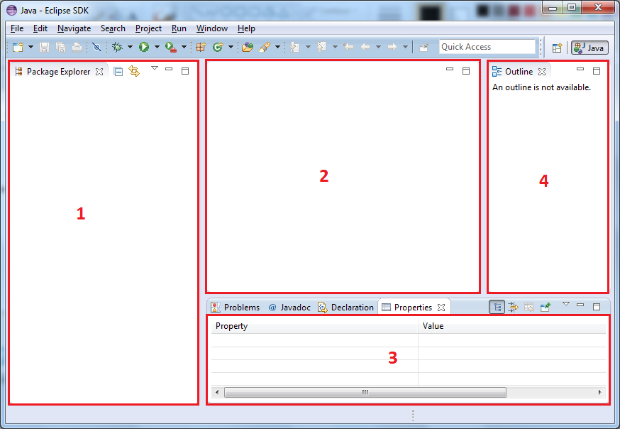

Workbench
Assuming that you have the Java perspective active and have successfully opened the Properties
view, your workbench should now look like this :

The four main areas of interest in the Eclipse workbench are :
- The Package Explorer view : this view gives an overview of all projects in your workspace,
together with all their folders and files (just look at a project as a collection of folders and
files).
- The editor area : for each diagram you open, a tab will appear in this area.
- The Properties view : shows some useful information for the currently selected item in your
workbench (for instance the details for the record you have selected in one of your
diagrams).
- The Outline view : displays a tree that illustrates the structure of the schema in the currently
open diagram editor; this view allows you to quickly locate a record or set in your diagram.